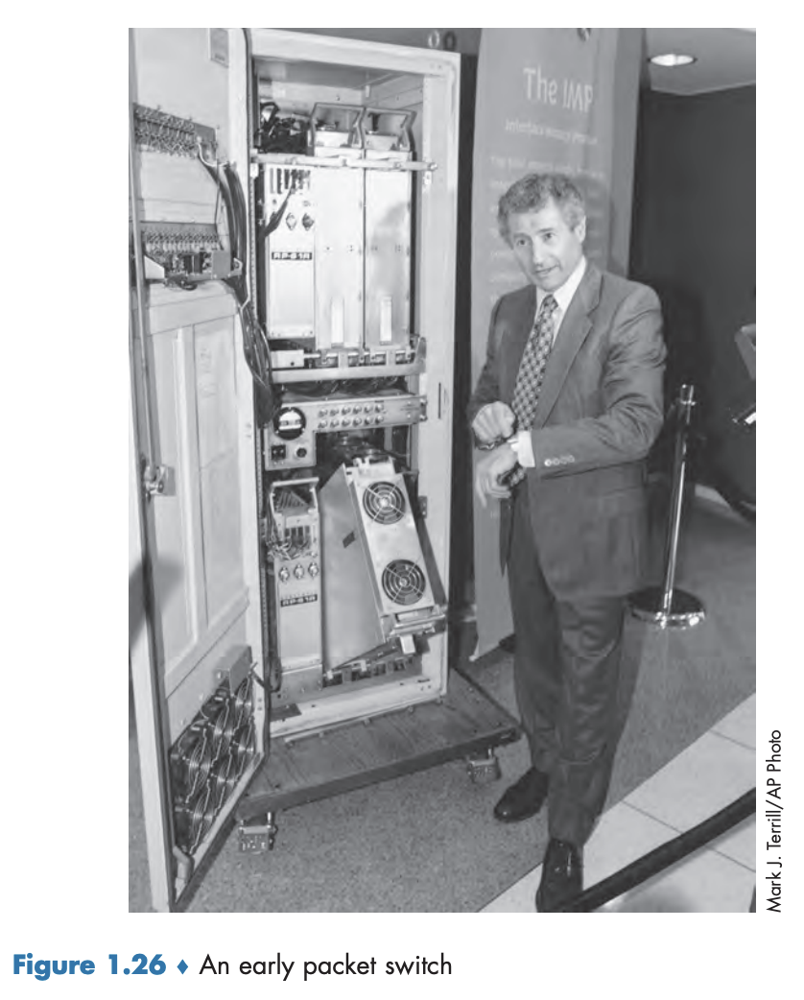

1.7 컴퓨터 네트워킹과 인터넷의 역사
1.1~1.6절에서 컴퓨터 네트워킹과 인터넷 기술 개요를 살펴봤다. 이제 인터넷의 역사를 좀 더 알아보자.
1.7.1 패킷 교환 개발: 1961~1972
전화망
- 1960년대 초반에 주요한 통신 네트워크
- 컴퓨터의 중요성과 비용의 증가, 시분할 컴퓨터의 등장으로 지역에 분산된 사용자들이 컴퓨터를 공유할 수 있도록 컴퓨터를 연결하는 방법에 관심을 가짐.
- 각 사용자가 만드는 트래픽은
집중적(bursty)임. → 활동과 비활동 사이의 기간이 일정하지 않음.
패킷 교환 기술
- MIT 대학원생이었던 레너드 클라인룩(Leonard Kleinrock)이 처음으로 공개함.
- 큐잉 이론을 이용하여 집중적인 트래픽 소스에 대한 패킷 교환 접근 방식의 효율을 잘 보여줌.
- 1964년에 랜드 연구소(Rand Institute)의 폴 바란(Paul Baran)은 군사 네트워크에서의 음성 보안을 위한 패킷 교환 사용에 관한 조사를 시작
- 영국 국립물리연구소(National Physical Laboratory, NPL)의 도널드 데이비스(Donald Davies)와 로저 스캔틀베리(Roger Scantlebury)도 개발을 시작함. → MIT, 랜드 연구소, NPL의 연구는 오늘날 인터넷의 기초를 닦았으나, 인터넷은 1960년대 초의 ’만들어서 보이자’하는 분위기의 긴 역사였음.
ARPAnet
- MIT에서 클라인록의 동료였던 J.C.R 릭클라이더(Licklider)와 로렌스 로버츠(Lawrence Roberts)가 미국 ARPA(Advanced Research Projects Agency)에서 컴퓨터 과학 프로그램을 이끌며 만든 네트워크.
- 첫 번째 패킷 교환 컴퓨터 네트워크이자 오늘날 공중 인터넷의 직계 원조임.
- 1969년 노동절에 첫 번째 패킷 스위치가 클라인록의 지휘 아래 UCLA에 설치되었고, 곧이어 3개의 패킷 스위치가 스탠퍼드 연구소(Stanford Research Institute, SRI), 산타바바라대학교, 유타 대학교(그림 1.26)에 설치되어 1969년 말에 4개의 노드로 구성됨.
- 1972년에는 약 15개의 노드로 커졌고 로버트 칸(Robert Kahn)이 처음으로 일반인에게 소개함.
- 종단 시스템 간에 NCP(network-control protocol)라고 하는 첫 번째 호스트 간(host-to-host) 프로토콜이 완성되었고, 종단 간에서 프로토콜을 사용할 수 있게 되자 애플리케이션을 개발할 수 있게 되었음. 
전자메일
- 최초의 전자메일 프로그램은 1972년 레이 톰린슨(Ray Tomlinson)이 만들었다.
1.7.2 독점 네트워크와 인터네트워킹: 1972~1980
다른 네트워크들의 등장
초기 ARPAnet은 단일 폐쇄 네트워크였으며, ARPAnet 호스트와 통신하기 위해서는 다른 ARPAnet IMP에 실제로 접속해야 헀다. 이와 별개의 네트워크들도 등장했다.
- DARPA의 패킷 위성과 패킷 라디오 네트워크
- ALOHAnet: 하와이에 위치하는 대학들을 함께 연결하는 마이크로파 네트워크. 노먼 에이브럼슨(Norman Abramson)이 개발. 알로하(ALOHA) 프로토콜은 지리상 분산된 사용자를 하나의 방송통신매체(라디오 주파수)를 공유하게 하는 최초의 다중 접속(multiple access) 프로토콜이다.
- Telenet: ARPAnet 기술을 기반으로 하는 BBN의 상용 패킷 교환 네트워크
- Cyclades: 프랑스의 패킷 교환 네트워크. 루이 푸장(Louis Pouzin)이 이끌음.
- Tymnet, GE Information Services: 시분할 네트워크(1960년대 후반에서 1970년대 초반 네트워크)
- SNA: ARPAnet 작업과 동시 진행된 IBM이 개발한 네트워크(1969~1974)
→ 빈턴 서프(Vinton Cerf)와 로버트 칸이 상호연결 네트워크, 즉 네트워크의 네트워크에 대한 선구적인 노력을 했다. 또한 인터네팅(internetting)이라는 용어가 이 노력을 표현하기 위해 생겨났다.
TCP 초기 버전
- 오늘날의 TCP와는 매우 다르다.
- 종단 시스템의 재전송을 통한 데이터의 신뢰적인 전송(오늘날 TCP의 일부분으로 남겨짐)과 전달 기능(오늘날 IP가 수행)을 결합한 형태
UDP
- 패킷 음성 같은 애플리케이션을 위한 비신뢰적이고 흐름 제어가 없는 종단 간의 전송 서비스의 중요성에 대한 인식과 결합하여 TCP에 대한 초기 실험은 TCP에서 IP를 분리하도록 했고 UDP 프로토콜을 개발했다. → TCP, UDP, IP 같은 주요 인터넷 프로토콜은 1970년대 후반에 그 개념이 자리 잡았다.
PC LAN
- 다중 접속 프로토콜에 대한 에이브럼슨의 연구는 유선 기반 공유 브로드캐스트 네트워크를 위한 이더넷 프로토콜 개발에서 멧칼프(Metcalfe)와 보그스(Boggs)에 의해 발전되었다.
- 멧칼프와 보그스의 이더넷 프로토콜은 여러 PC, 프린터, 공유 디스크를 함께 연결할 필요성 때문에 연구되었다.
- PC 혁명과 네트워크의 폭발이 있기 훨씬 전인 25년 전, 멧칼프와 보그스는 오늘날 PC LAN의 기초를 닦았다.
1.7.3 네트워크 확산: 1980~1990
공중 인터넷
1970년대 말까지 약 200개의 호스트가 ARPAnet에 연결되었고, 1980년대 말까지 오늘날의 인터넷과 유사한 네트워크 연합인 공중 인터넷에 연결된 호스트 수는 십만 개에 이르렀다.
- BITNET: 북동지역의 여러 대학 사이에 전자메일과 파일 전송을 제공
- CSNET(computer science network)은 ARPAnet에 접속하지 않고 대학 연구자들을 연결하기 위해 만들어짐.
- NSFNET: 1986년 NSF가 지원하는 슈퍼컴퓨터센터에 접속 가능하도록 만들어졌다. 56 kbps의 초기 백본으로 시작하여 NSFNET의 백본은 1980년대 말에 1.5 Mbps로 동작하게 되었으며 지역 네트워크를 연결하는 주요 백본이 되었다.
TCP/IP
- 1983년 1월 1일 공식 설치된 ARPAnet의 새로운 표준 호스트 프로토콜(NCP 프로토콜을 대체).
- NCP에서 TCP/IP로의 전환은 플래그 데이(flag day) 형태의 사건이었다. → 모든 호스트는 같은 날 동시에 TCP로 전환
- 1980년대 후반에 호스트 기반의 혼잡 제어를 구축하기 위해 TCP에 중요한 확장이 이루어졌다.
- 사람이 읽을 수 있는 인터넷 이름(예: gaia.cs.umass.edu)과 32비트 IP 주소 간의 매핑에 사용되는 도메인 네임 시스템(domain name system, DNS)도 개발되었다.
미니텔(Minitel)
- 1980년대 초 프랑스에서는 프랑스에서는 데이터 네트워킹을 모든 가정으로 보급하려는 아심 찬 계획인 미니텔(Minitel) 프로젝트를 시작했다.
- 공중 패킷 교환 네트워크(가상 회선 방식을 사용하는 X.25 프로토콜 스택에 기반을 둠), 미니텔 서버와 내장형 저속 모뎀을 포함하는 값싼 터미널로 구성됨.
- 모든 가정에 무상으로 미니텔 단말기를 제공하였고 1984년에 큰 성공을 거두었다.
- 미니텔 사이트는 전화번호 사이트 같은 무료 사이트와 사용자가 사용량에 따라 요금을 받는 사설 사이트를 포함했다.
- 1990년대 중반에 홈뱅킹에서 전문 연구 데이터베이스까지 20,000개가 넘는 다양한 서비스를 제공하여 전성기를 맞았다.
1.7.4 인터넷 급증: 1990년대
인터넷의 지속 발전과 상업화를 상징하는 두 사건으로 대변된다.
- 인터넷의 원조인 ARPAnet이 더 이상 존재하지 않게 되었고, 1991년에 NSFNET 상업화 제한을 풀었다.
- 인터넷 백본 트래픽을 상용 인터넷 서비스 사업자가 전달하게 하여 NSFNET 자체는 1995년에 임무를 끝냈다.
- 월드와이드앱(World Wide Web, WWW)이 출현하였다.
- 검색(예: 구글과 빙), 인터넷 상거래(예: 아마존과 이베이), 소셜 네트워크(예: 페이스북) 등을 포함하는 수백 가지의 새 애플리케이션을 만들고 보급하는 플랫폼으로 등장했다.
월드와이드웹(World Wide Web, WWW)
- 웹은 1989~1991년에 팀 버너스 리(Tim Berners-Lee)가 CERN에서 처음으로 만들었다.
- 1940년대의 바내바르 부시(Vannevar Bush)와 1960년대 이후의 테드 넬슨(Ted Nelson)이 개발한 하이퍼텍스트에 관한 초기 연구의 아이디어를 바탕으로 한다.
- 버너스 리와 그의 동료는 웹의 네 가지 주요소(HTML, HTTP, 웹 서버, 브라우저)의 초기 버전을 개발했다.
- 1993년 말에 약 200개의 웹 서버가 동작 중이었다.
넷스케이프(Netscape)
- 클라크(Jim Clark), 모자이크 커뮤니케이션스(Mosaic Communications, 이후에 넷스케이프 커뮤니케이선스 코퍼레이션(Netscape Communications Corporation)으로 상호가 변경됨)를 창업한 마크 앤드리슨(Marc Andreessen)을 비롯하여 여러 연구자가 GUI 인터페이스형 웹 브라우저를 개발하고 있었다. → 1995년까지 대학생들은 매일 웹을 서핑하기 위해 넷스케이프를 즐겨 사용했다.
이 시기에 크고 작은 회사가 웹 서버를 운영했고 웹을 통한 상거래를 시작했다. 1996년, 넷스케이프와 마이크로소프트 사이어 브라우저 경쟁을 야기한 웹 브라우저를 마이크로소프트에서도 만들기 시작했다. 몇 년 후, 이 전쟁에서 마이크로소프트가 승리하게 된다. 1990년대 후반은 인터넷의 큰 성장과 혁신 시대로, 주요 기업과 수천 개의 신생 기업이 인터넷 제품과 서비스를 만들었다. 세기가 끝나는 시점에서 인터넷은 다음 4개의 킬러 애플리케이션을 포함해서 수백 개의 인기 있는 애플리케이션을 지원하게 된다.
- 첨부물과 웹 접속 전자메일을 포함하는 전자메일
- 웹 브라우징과 인터넷 상거래를 포함하는 웹
- 대화상대 목록을 가진 인스턴트 메시징
- 냅스터(Napster)가 개척한 P2P를 통한 MP3 파일 공유 → 앞의 두 애플리케이션은 연구 커뮤니티에서, 뒤의 두 가지는 젊은 기업가 몇몇이 만들었다. 1995~2001년은 금융시장에서 인터넷과 관련하여 커다란 부침이 있었다. 수익을 내는 기업이 되기도 전에 수백의 인터넷 벤처기업이 IPO(기업 공개를 통해 주식 시장에서 주식이 거래되기 시작하는)를 했다. 많은 기업은 특별한 매출 없이도 수조 달러 가치를 갖게 되었고 이러한 인터넷 주식은 2000~2001년에 많은 벤처기업이 문을 닫으면서 몰락했다. 그런데도 마이크로소프트, 시스코, AOL, 야후, 이베이, 구글, 아마존 같은 많은 회사는 인터넷 공간에서 커다란 승리자로 나타났다.
1.7.5 새 천 년
- 스마트폰의 등장으로 인터넷 사회가 더 크게 변화했다.
- 접속 네트워크와 네트워크 백본에서 더욱 빠른 라우터의 구축 그리고 좀 더 높은 전송률을 포함한 모든 방면에서 개선이 이루어지고 있다.
- 그러나 다음 개발들은 특별한 관심을 끌고 있다.
- 가정에 광대역 인터넷 접속의 공격적인 구축: 사용자가 제작한 비디오의 배포(예: 유튜브(YouTube)), 영화와 TV 쇼의 온디맨드 스트리밍(예: 넷플릭스(Netflix)), 다중 참여 비디오 콘퍼런스(예: 스카이프(Skype), 페이스타임(Facetime), 구글 행아웃(Google Hangouts))를 포함하는 풍부한 비디오 애플리케이션을 위한 무대를 제공했다.
- 엘프(Yelp), 틴더(Tinder), 와즈(Waz) 같은 새로운 위치 기반 애플리케이션이 가능: 인터넷에 연결되는 무선 장치의 수는 2011년에 유선 장치의 수를 초과했다. 이 고속 무선 접속으로 인해 손 안의 컴퓨터(아이폰, 안드로이드, 아이패드 등)가 빠르게 보급되었으며 이를 통해 인터넷 무선 접속을 지속적으로 즐길 수 있게 됐다.
- 페이스북(Facebook), 인스타그램(Instagram), 트위터(Twitter), 위챗(WeChat, 중국에서 유행) 같은 온라인 소셜 네트워크: 인터넷 상에 거대한 사람들의 네트워크를 생성했다. 이러한 많은 소셜 네트워크는 사진 공유뿐만 아니라 메시지 전달에 주로 사용된다. 오늘날 많은 인터넷 사용자는 주로 하나 이상의 소셜 네트워크 내에서 ‘생활한다’. API를 통해, 온라인 소셜 네트워크는 모바일 결제를 포함하는 새로운 네트워크 애플리케이션과 분산 게임용 플랫폼을 생성한다.
- 구글과 마이크로소프트 같은 온라인 서비스 제공자는 자신의 커다란 사설 네트워크를 구축했다.
- 이는 전 세계적으로 분산된 자신들의 데이터 센터를 연결할 뿐만 아니라 하위 계층 ISP와 직접 연결(peering)함으로써 가능한 한 많은 인터넷을 우회하는 데 사용된다.
- 구글의 데이터 센터가 마치 사용자의 컴퓨터 내에서 동작하는 것처럼 구글은 거의 즉각적으로 검색 결과와 전자메일 접속을 제공한다.
- 많은 인터넷 상거래 회사는 ’클라우드’에서 자신의 애플리케이션을 수행하고 있다(아마존의 EC2, 마이크로소프트의 애저(Azure), 알리바바 클라우드(Alibaba Cloud)). 또한 많은 회사와 대학들도 그들의 인터넷 애플리케이션(예: 전자메일과 웹 호스팅)을 클라우드로 이동했다. 클라우드 회사는 애플리케이션에 확장 가능한 컴퓨팅과 저장 환경을 제공할 뿐만 아니라 고성능 사설 네트워크 접속도 제공한다.